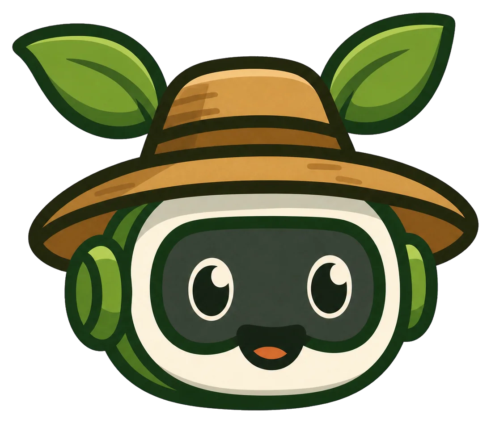
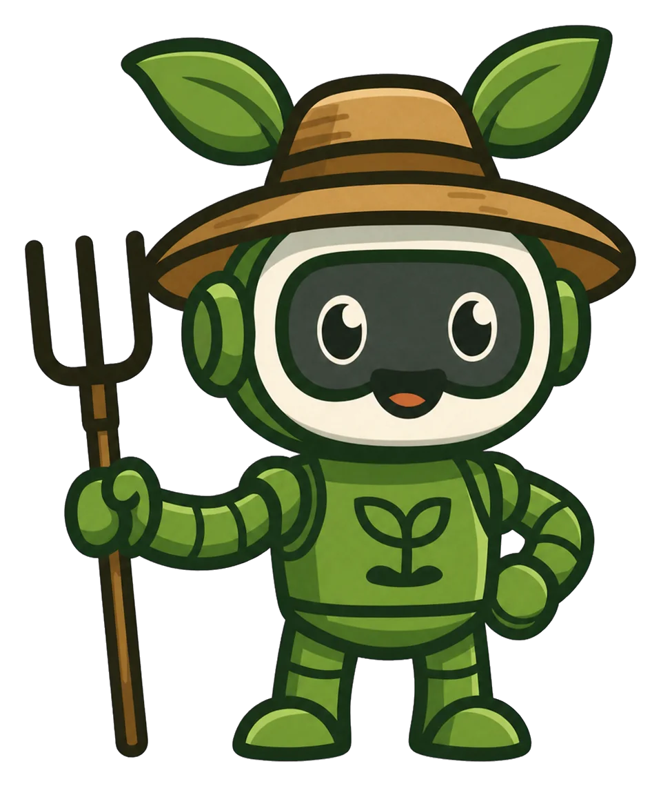
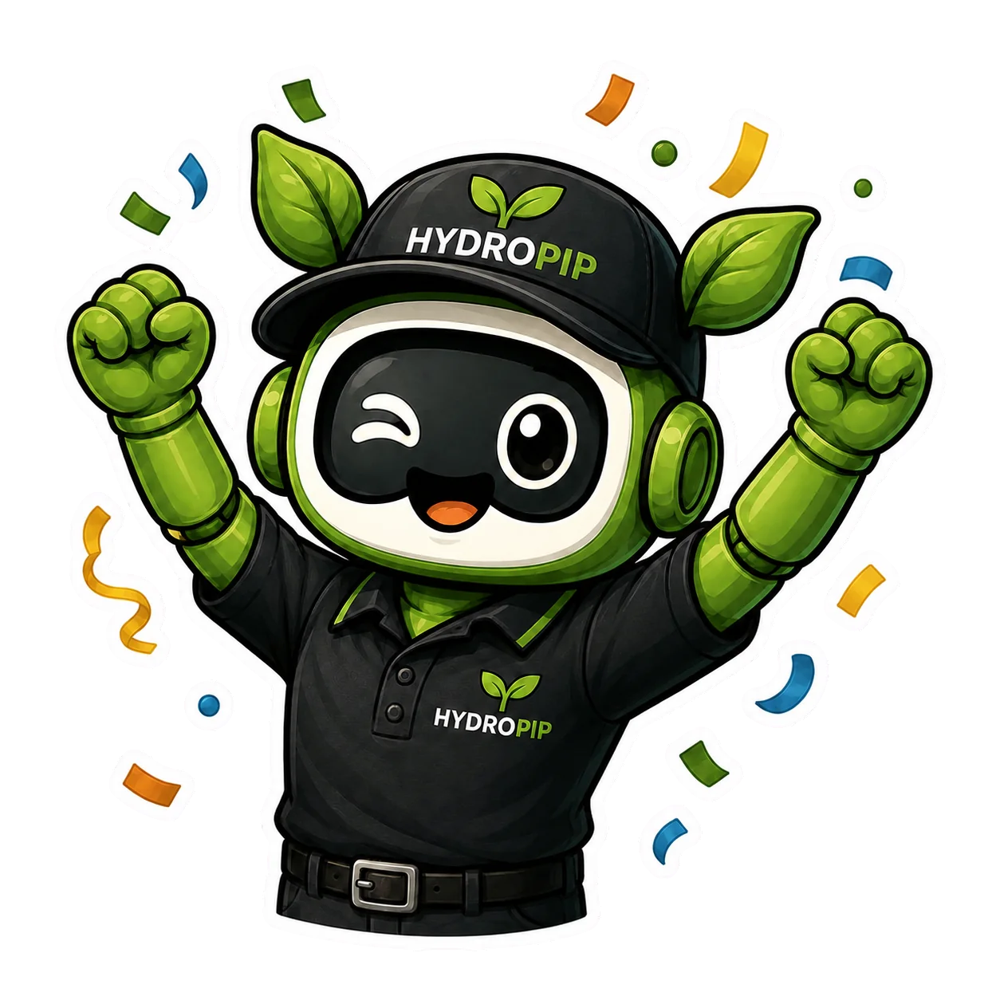

A Home Screen app may have a separate farm. Export a backup in Settings before switching.

The first tower is quiet and the Veg Stand is closed. Help Pip bring the farm back one crop at a time.
Campaign progress has been saved.

The first tower and Veg Stand are back in business.
Progress saved in this browser
Farms stay in this browser, not an online account. Export a backup before changing devices or clearing browser data.
Email opens a draft to info@hydropip.com for you to review and send. No farm backup is attached.
Preview
This removes your farm, coins, XP, crops, tasks, homestead projects, and crop mastery.